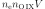
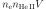
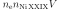

4.1.34. Rrc: radiative recombination continuum model¶
This is a simplified model, aimed to calculate radiative recombination continua for photoionized plasmas. It is a simple, limited shortcut to a more fully complete model for the emission from a recombining plasma.
The user essentially prescribes the emission measure for each ion as well as the radiation temperature, and then this model calculates the continuum emission corresponding to this temperature and set of ionic emission measures. Line radiation is not taken into account. However, for physical self-consistency, we take account of all three continuum emission components: Bremsstrahlung, two photon emission and free-bound radiation (= the RRC).
The reason for having no physical model to couple the ionic emission measures (contrary to for example the CIE model), is that this allows the user to fit these emission measures without making a priori assumptions about the ionization equilibrium. The user might then combine later the set of derived emission measures with any of his relevant models.
Warning
Take care that for too high temperatures, two photon emission might be stronger than the free-bound (RRC) emission!
Warning
Take care that the fit parameters are emission measures of a given ion, while the radiation occurs in the next ion. For example radiative recombination of O XI to O VIII is proportional to the emission measure of O IX (), but produces an emission edge in O VIII at 14.22 Å.
Warning
No recombination is possible to neutrals, so therefore there is no H , O or Fe in this model.
The parameters of the model are:
t : The temperature  in keV. Default value: 1 keV.
in keV. Default value: 1 keV.h2 : The H emission measure in units of

 . Default value: 0.
. Default value: 0.he2 : The He emission measure  in units of
. Default value: 0.he3 : The He emission measure in units of
. Default value: 0.
ni29 : The Ni emission measure
 in units of
. Default value: 0.